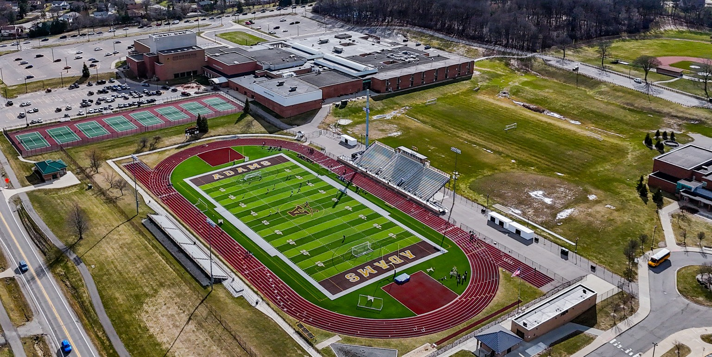
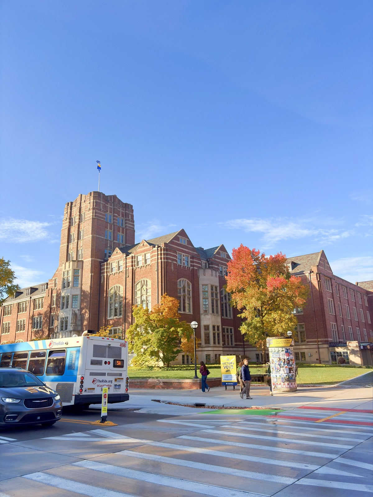

Inside the game.
Beyond the frame.
Sports photography. Court projection mapping.
A different perspective on the energy of the game.

01 / PHOTOGRAPHY
ON THE FIELD.
IN THE MOMENT.
More than
the scoreboard.
The action, the anticipation, and the moments around the game. A selection of football, basketball, and baseball photography.
Showing all 24 photographs.
02 / COURT PROJECTION MAPPING
LIVE EXPERIENCEThe court is
the canvas.
Taking creative work beyond a screen and onto the gym floor. Light, movement, and court-scale imagery become part of the live experience.
- MY ROLE
- Court mapping & projection work
- FORMAT
- Live court projection
A space transformed.
The recording shows the work in its intended setting: projected imagery across the court, surrounded by an audience. It connects the digital visuals to the scale and atmosphere of the room.
Featured contribution: court mapping and projection work. The live recording documents the installation; individual visual elements may include shared or sourced material.
COURT STUDY / 02
Lines, light,
movement.
A second court projection piece, pairing illuminated lines across the floor with a central emblem. Another view of the court as a space for moving imagery.
COURT MAPPING & PROJECTION WORK
03 / AERIAL PERSPECTIVES
Another
point of view.
A stadium flight that moves from the field to the larger setting. A different way to see a familiar sports space.
DRONE FOOTAGE / STADIUM STUDY
BEHIND THE WORK
JG Creative.

Photography on the sidelines.
Creative work across the court.
My work spans sports photography and court projection mapping, with aerial footage adding another perspective. This portfolio brings those practices together through the people, spaces, and energy of athletics.